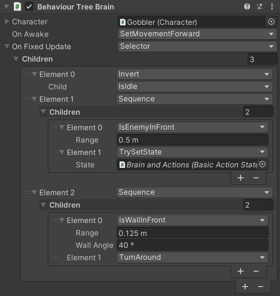
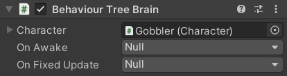
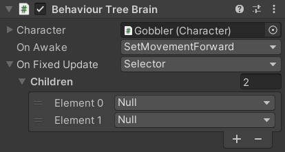

A Behaviour Tree is a system for managing logic in a way that is particularly well suited for AI. There are many Behaviour Tree plugins on the Unity Asset Store, but this system uses a much simpler implementation to avoid requiring any more assets. This implementation is should be easy to understand and could potentially be extended, but if you intend to use the Platformer Game Kit to make a real game you might want to consider investing in a fully fledged Behaviour Tree plugin to start from a more powerful baseline. In particular, the Inspector interface of this system is alright for the simple behaviours used here but would start to become cumbersome in more complex situations.
This system uses Animancer's Polymorphic Drawer to allow nodes to be configured in the Inspector without needing any specific custom Inspector code for it.

Core Concept
The basic idea behind Behaviour Trees is that they are made up of various nodes which execute certain logic and then return a Result:
public enum Result
{
/// <summary>Neutral. Result is undetermined because execution has not completed.</summary>
Pending = 0,
/// <summary>Positive. The operation was completed successfully.</summary>
Pass = 1,
/// <summary>Negative. The operation was unsuccessful.</summary>
Fail = -1,
}
Nodes can be anything that implements IBehaviourNode:
public interface IBehaviourNode : IPolymorphic
{
Result Execute();
Nodes can also have one or more other nodes as their children, similar to the GameObjects in Unity's Hierarchy:
int ChildCount { get; }
IBehaviourNode GetChild(int index);
}
Example

- Calling
Executeon aSequencewill callExecuteon each of its children until one of them returnsPendingorFailand then it returns that result. Or if they all returnPass, then theSequencedoes too. IsWallInFrontchecks if a wall is in front of the character. If so, it returnsPass, but otherwiseFail.TurnAroundsimply reverses theCharacter.MovementDirectionX.- So a
SequencecontainingIsWallInFrontthenTurnAroundwill first check for a wall, and if there is one then it will turn the character around. Otherwise if there is no wall,IsWallInFrontwill returnFailand theSequencewill returnFailwithout executing theTurnAroundnode.
Brain
Since nodes can contain other nodes, any node can be a whole Behaviour Tree. So the BehaviourTreeBrain simply contains one node that will be executed by Awake to perform operations once on startup and another to be executed by FixedUpdate for the main logic of the brain:
public class BehaviourTreeBrain : CharacterBrain
{
[SerializeReference] private IBehaviourNode _OnAwake;
[SerializeReference] private IBehaviourNode _OnFixedUpdate;
Normally, those fields would be null by default when a BehaviourTreeBrain is first added to an object:

But it uses a Reset method to automatically assign some default nodes as a more useful starting point:
#if UNITY_EDITOR
protected virtual void Reset()
{
_OnAwake = new SetMovementForward();
_OnFixedUpdate = new Selector();
((IPolymorphicReset)_OnFixedUpdate).Reset();
}
#endif

The IBehaviourNode interface and the General Nodes like Selector and Sequence are generalised concepts which have no need to know anything about the Platformer Game Kit's classes so they could be taken directly into another project without needing to be modified (as long as that project has Animancer for the Polymorphic Drawer system). However, the Specific Nodes like IsWallInFront and TurnAround need to directly interact with the Character component. So in order to give those nodes what they need without affecting the ones that don't need it, the Character is passed into a new Context so that it can be accessed via the static Context<Character>.Current property while the Execute method is running:
protected virtual void Awake()
{
using (new Context<Character>(Character))
_OnAwake?.Execute();
}
protected virtual void FixedUpdate()
{
using (new Context<Character>(Character))
_OnFixedUpdate?.Execute();
}
}
That is actually one of the aspects of this system which has limited extensibility compared to more powerful systems. It works fine for the simple nodes currently in the system, but it would start getting unwieldy if nodes wanted access to more than just the single Character the brain is controlling.